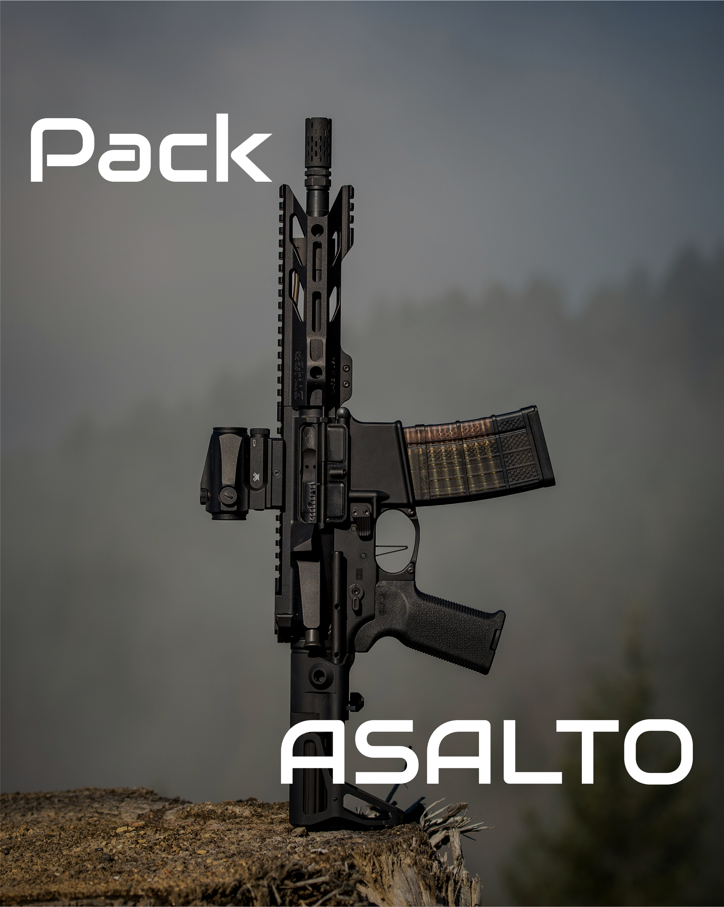
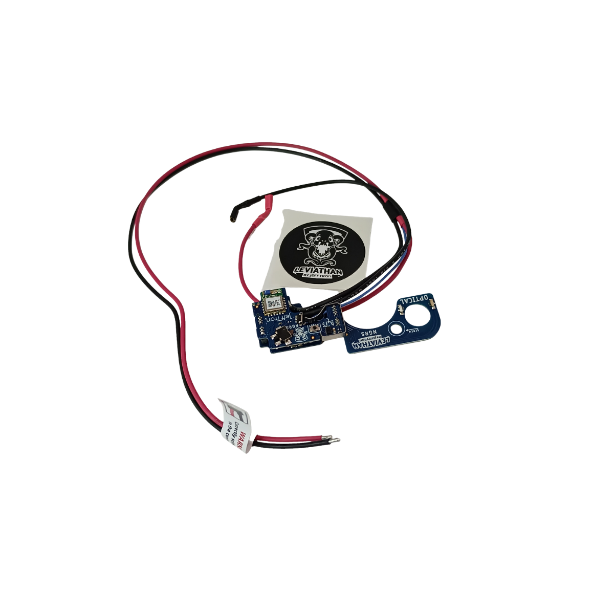
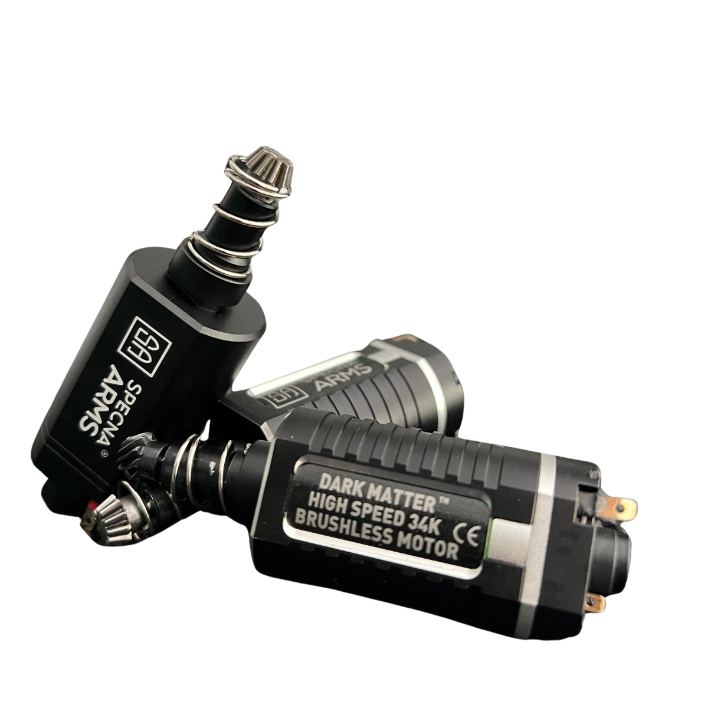
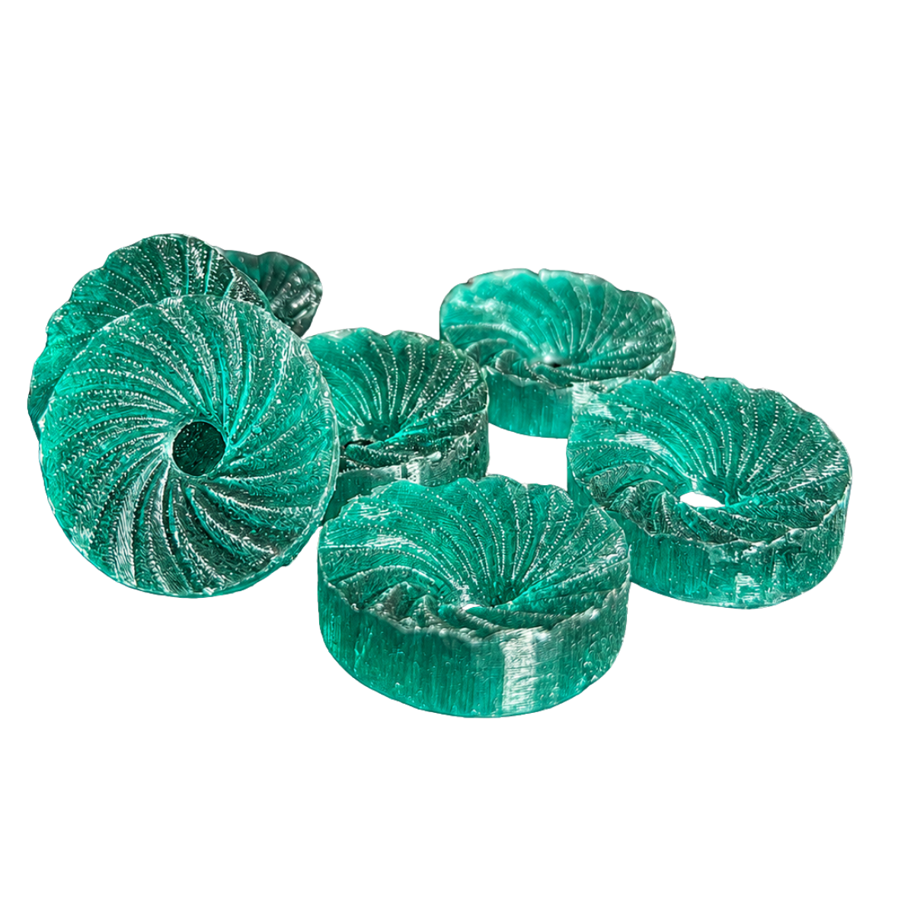

Respuesta instantánea
El conjunto se ajusta para reducir sensación de ciclo lento y mejorar la reacción al disparo.
O'Clock Airsoft · Preparación de respuesta
Respuesta inmediata para juego dinámico.
Una preparación orientada a conseguir una réplica más reactiva, con disparo más limpio y controlado en situaciones rápidas.
Lo que notas en partida
El conjunto se ajusta para reducir sensación de ciclo lento y mejorar la reacción al disparo.
Un disparo más limpio ayuda a mantener ritmo sin perder control del gatillo.
La transmisión y el sistema neumático trabajan con menos arrastre y más orden.
La preparación busca respuesta rápida dentro de una configuración equilibrada.
Sellado y compresión se revisan para aprovechar mejor el aire disponible.

Configuración Pack Asalto
Una configuración pensada para usuarios que necesitan una réplica ágil, fiable y con respuesta clara en situaciones de juego dinámico.
Componentes clave de respuesta
No se plantea como una lista cerrada de piezas. Se seleccionan componentes y ajustes según plataforma, uso y comportamiento buscado.

Lectura más precisa y sensación de disparo más directa.

Entrega de potencia estable para mantener respuesta en uso exigente.

Transmisión ajustada al objetivo de respuesta y fiabilidad.

Base mecánica preparada para un ciclo más sólido y predecible.

Cilindro de una sola pieza diseñado para mejorar la estabilidad del conjunto neumático y reducir pérdidas innecesarias de aire. Su construcción monobloque favorece un comportamiento más sólido y coherente en configuraciones exigentes.
Mayor estabilidad neumática y mejor aprovechamiento del volumen de aire.
Estabiliza el movimiento interno durante el ciclo.

Cabeza de pistón diseñada para mejorar la eficiencia del conjunto neumático, favorecer un sellado más estable y aportar una entrega de energía más consistente en cada disparo.
Mayor eficiencia y respuesta más estable.Sistema interno
La respuesta no depende de una sola pieza. Depende de cómo trabajan gatillo, motor, engranajes, pistón, nozzle y ajuste interno dentro de una misma configuración.

Velocidad bajo control
Una réplica rápida no sirve de nada si se vuelve brusca, inestable o poco fiable. El Pack Asalto busca una respuesta más directa sin perder control del conjunto.

Criterio técnico
Cada réplica tiene tolerancias, desgaste y límites. Por eso el Pack Asalto se ajusta según la plataforma y el objetivo real del jugador.
Compatibilidad / uso recomendado
Consulta técnica
Déjanos tu base y el comportamiento que buscas. Revisaremos compatibilidad antes de recomendar una configuración.
O'Clock Airsoft
Cuéntanos tu base y qué tipo de respuesta buscas. Te orientamos antes de montar piezas sin criterio.
Otras configuraciones